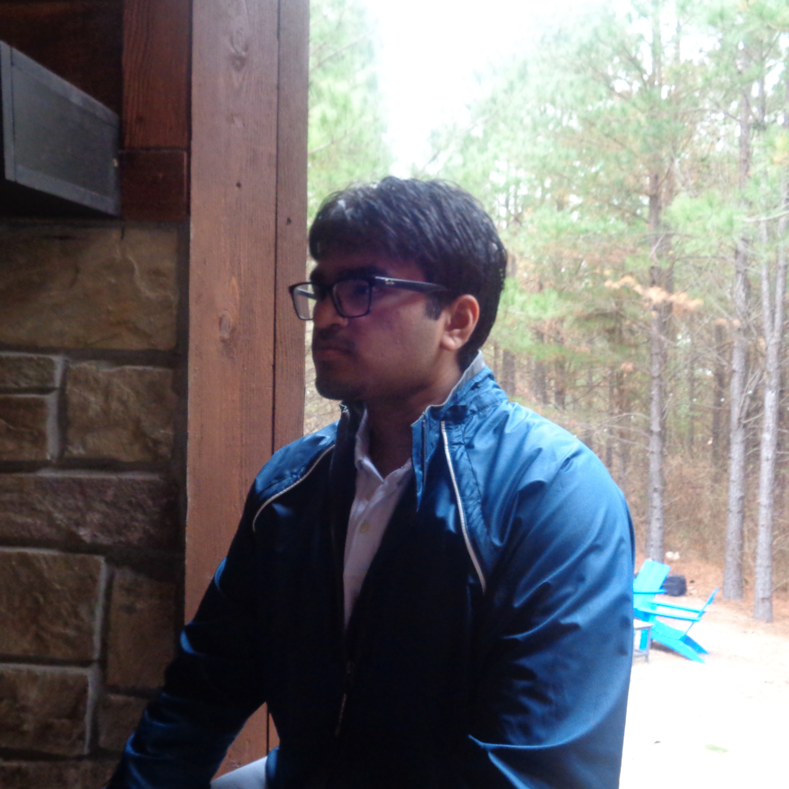

DRONE OPERATOR / CREATIVE
Hi! I'm Rayyan Manzoor, a Biomedical Sciences Major at the University of Texas at Dallas. I am a Tech Enthusiast, Passionate about innovation, research, and exploring new ideas.
Bringing clean, quality matcha to everyday life.
JANA is a matcha beverage business I founded at 18 under my registered company, Jana Ventures LLC. The brand is built around offering clean, high-quality matcha products that support wellness and daily balance. After extensive product development and branding work, JANA has grown into a physical location on Preston, where customers can experience our drinks in person. This project explores the full entrepreneurial process behind JANA—from establishing the LLC and creating the brand identity to product testing, marketing strategy, and launching our storefront.
Ta.
Capturing landscapes and events from a unique aerial perspective.
My passion for drone videography allows me to combine technical skill with creative storytelling. I specialize in cinematic shots of Texas landscapes, urban environments, and event coverage.
Vl.
Exploration of neural signaling pathways.
This academic project, conducted at UTD, focused on the inhibitory effects of novel compounds on specific G-protein coupled receptors (GPCRs) relevant to anesthetic research.
The study utilized cell culture models and fluorescent assays to measure receptor activity. The findings suggest a potential therapeutic window for... [briefly summarize the outcome].
Full paper available upon request.